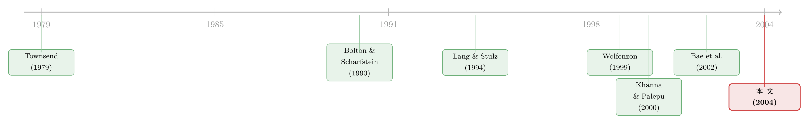

<!DOCTYPE html>
<html lang="en">
<head>
<meta charset="utf-8">
<meta name="viewport" content="width=device-width, initial-scale=1">
<title>把公司绑在一起，不是为了协同，而是为了「赖账」 – Jun He</title>
<style>
  @font-face {
    font-family: 'STIX Two Text';
    font-style: normal;
    font-weight: 400;
    font-display: swap;
    src: url(https://fonts.gstatic.com/s/stixtwotext/v12/YA9Gr02F12Xkf5whdwKf11l0p7uWhf8lJUzXZT2omsvbURVuMkWDmSo.woff2) format('woff2');
  }
  @font-face {
    font-family: 'STIX Two Text';
    font-style: normal;
    font-weight: 500;
    font-display: swap;
    src: url(https://fonts.gstatic.com/s/stixtwotext/v12/YA9Gr02F12Xkf5whdwKf11l0p7uWhf8lJUzXZT2omsvbURVuMkWDmSo.woff2) format('woff2');
  }
  @font-face {
    font-family: 'STIX Two Text Fallback';
    src: local('Times New Roman');
    ascent-override: 72.67%;
    descent-override: 22.7%;
    line-gap-override: 23.84%;
    size-adjust: 104.86%;
  }
</style>
<link rel="stylesheet" href="/styles.css?v=10">
<link rel="stylesheet" href="/article.css?v=11">

</head>
<body>

<header class="site-header">
  <nav>
    <a href="/" class="nav-name">Jun He</a>
    <a href="/posts">Post</a>
    <a href="/research">Research</a>
    <a href="/note">Note</a>
    <a href="/data">Data</a>
    <a href="/bergen">Bergen</a>
  </nav>
  <button class="theme-toggle" aria-label="Toggle theme" onclick="toggleTheme()">🌞</button>
</header>

<article class="article-layout" data-section="research">
  
  <div class="article-main">
    <div class="article-header">
      <h1>把公司绑在一起，不是为了协同，而是为了「赖账」</h1>
      
      
      <div class="paper-source">
        <div class="paper-source-title"><span class="paper-source-tag">[2004 JFE]</span> Bailout and Conglomeration</div>
        <div class="paper-source-authors"><a href="/research/author/se-jik-kim/">Se-Jik Kim</a></div>
      </div>
      
      <div class="article-meta">
        <span>Jun He</span>
        <span>June 02, 2026</span>
      </div>
      
      <div class="article-tags">
        
        
        
        <span class="tag">公司金融</span>
        
        
        
        
        <span class="tag">理论模型</span>
        
        
        
        
        <span class="tag">新兴市场</span>
        
        
        
        
        <span class="tag">银行救助</span>
        
        
      </div>
      
    </div>

    <div class="callout"><div class="callout-title">Note</div><p>本文读的是 <strong>Kim (2004, <em>Journal of Financial Economics</em>)</strong>：在一个高度依赖银行贷款、银行又分不清企业好坏的新兴市场里，「清算」本是银行用来筛掉烂公司的一把刀；而企业把彼此「捆」成一个大集团（chaebol），恰恰是为了把这把刀的刀刃磨钝——集团稀释了违约所携带的信息，让银行不敢清算、只能全额救助。于是哪怕集团本身拉低了公司价值，理性的、厌恶风险的企业仍会争相组团。</p></div>
<h2 id="1">1 一个绕不开的悖论</h2>
<p>先抛一个让人不太舒服的事实。</p>
<p>在发达经济体，多元化是「有罪」的。Lang 和 Stulz（1994）、Shin 和 Stulz（1998）、Rajan、Servaes 和 Zingales（2000）一路做下来，结论惊人地一致：高度多元化的公司，系统性地跑输专注型公司，市场给它们贴上一个「多元化折价（diversification discount）」。Scharfstein 和 Stein（2000）把原因归到内部资本市场的阴暗面——部门经理的寻租，逼着总部把钱补贴给烂部门。</p>
<p>到了新兴市场，故事似乎更糟。用七个亚洲新兴市场的样本，Lins 和 Servaes（2001）发现集团关联企业相对独立企业<strong>折价交易</strong>；Joh（2003）发现韩国集团企业的盈利能力低于独立公司；Bae、Kang 和 Kim（2002）用并购数据直接指证，韩国集团在「掏空（tunneling）」——把资源从上市公司搬向控股股东。</p>
<p>那么问题来了：<strong>如果集团既毁价值、又被掏空，为什么在这些市场里它们偏偏无处不在，甚至主导了整个私人部门？</strong></p>
<p>这不是一个可以用「制度落后、企业愚蠢」糊弄过去的问题。韩国 30 大集团在 1990 年代初的交叉债务担保（cross-debt guarantees），就算剔除隐性形式也超过实收资本的 <code>300%</code>；韩国企业 1996 年的平均资产负债率高达 <code>350%</code>。这是一台精心搭起来、押上了全部身家的机器。能把身家压上去的人，多半不傻。</p>
<p>本文给出的答案，干净得近乎冷酷：<strong>组团不是为了把饼做大，而是为了在还不上钱的那天，更大概率地被银行「救」下来。</strong> 换句话说，集团是一件专门用来「赖账」、或者说最小化清算风险的装置。</p>
<h2 id="2">2 舞台：一个分不清好坏的银行</h2>
<p>要让这个故事成立，需要一个非常具体的制度环境，而作者把它压缩进了一个两期（\(t=1,2\)）的异质性主体模型里。</p>
<p>经济体里有一连续的、<strong>厌恶风险</strong>的企业家，每人独资经营一家公司（这样就刻意绕开了控股股东与小股东之间的代理问题——本文不讲掏空）。公司用线性技术生产：</p>
<p>$$y_t = A_t\,k_t,$$</p>
<p>其中 \(k_t\) 是投入的资本，\(A_t\) 是公司特有的生产率冲击。公司分两类——好公司（高平均生产率）和坏公司（低平均生产率），区别只在拿到正向冲击的概率：</p>
<p>$$
A_t=\begin{cases}A & \text{with prob } p\\[2pt] 0 & \text{with prob } 1-p\end{cases}\ (\text{good}),
\qquad
A_t=\begin{cases}A & \text{with prob } \delta\\[2pt] 0 & \text{with prob } 1-\delta\end{cases}\ (\text{bad}),\qquad \delta<p .
$$</p>
<p>注意这里<strong>唯一</strong>的差别：好公司更可能（概率 \(p\)）拿到那个正向冲击 \(A\)，坏公司只有更小的概率 \(\delta\)。一旦拿到，冲击的<strong>大小是一样的</strong>（都是 \(A\)）。这个看似不起眼的设定，是整篇文章的命门——因为它意味着：<strong>即便生产率实现了，光看一家公司的产出，也无法断定它是好是坏。</strong> 好坏的信息，永远是概率性的，永远蒙着一层雾。</p>
<p>更要命的是银行。模型假设的是「弱银行」：它没有能力直接观测任何一家公司的产出，更分不清谁是好谁是坏。它能看见的，<strong>只有一件事</strong>——按照债务合约，每家公司要在第一期末偿付一个事先约定的金额 \(d\)；银行只能观察到<strong>谁还上了 \(d\)、谁没还上</strong>（即「违约」）。Bolton 和 Scharfstein（1996）把这种还不上钱的违约叫做「流动性违约（liquidity default）」，本文有意不引入「战略性违约」，就是要把焦点死死钉在清算如何改变资本的质量构成上。</p>
<p>违约之后，按照债务的不完全契约理论（Hart, 1995；Hart and Moore, 1994；Townsend, 1979），公司资产（资本 \(k\)）的控制权转移给银行。这时银行手里有两张牌：</p>
<ul>
<li><strong>救助（bailout）</strong>：再借给它 \(d\)，让它把这一期的钱还上——这本质上就是<strong>展期</strong>，是不要求失败企业偿付 \(d\)。（关于「展期—续贷」如何把债权人变成人质，可参见<a href="/research/evergreening/">《欠你一千万的人，其实是债主的「人质」》</a>。）</li>
<li><strong>清算（liquidation）</strong>：把它做掉。但清算有代价——若清算 \(k\) 的资本，清算后的价值只剩 \(L=lk\)，其中 \(l\in(0,1)\)。\(l\) 越小，清算越亏。</li>
</ul>
<p>银行要决定的，就是对违约的独立公司救助多大比例 \(f\)（清算 \(1-f\)），以及对违约的集团救助多大比例 \(f_C\)。</p>
<h2 id="3">3 关键一步：清算，其实是一台「筛选机」</h2>
<p>现在进入全文的引擎。</p>
<p>对一家<strong>独立公司</strong>而言，违约意味着它这一期拿到了 \(0\) 冲击。那么，违约这件事本身，泄露了多少信息？</p>
<p>银行会做一次贝叶斯更新。设初始时好公司占比 \(x\)，坏公司占比 \(1-x\)。好公司违约（拿 \(0\)）的概率是 \(1-p\)，坏公司违约的概率是 \(1-\delta\)。于是，「一家公司在违约的前提下、它是坏公司」的后验概率为：</p>
<div class="mathanno-block"><div class="mathanno-eq">$$
\Pr(B \mid D) = \frac{\cssId{a1}{(1-x)(1-\delta)}}{\cssId{a2}{x(1-p)} \;+\; \cssId{a3}{(1-x)(1-\delta)}}
$$</div><aside class="mathanno-cards"><div class="mathanno-card" data-target="a1"><span class="mathanno-num">1</span>分子：既是坏公司、又恰好违约的那一块（坏 × 违约）</div><div class="mathanno-card" data-target="a2"><span class="mathanno-num">2</span>好公司里违约的：占比 x，违约概率 1−p</div><div class="mathanno-card" data-target="a3"><span class="mathanno-num">3</span>坏公司里违约的：占比 1−x，违约概率 1−δ；因 δ&lt;p 故 1−δ&gt;1−p，这一块被放大</div></aside><svg class="mathanno-lines"></svg></div>

<p>这条式子的直觉，一句话就能说清：因为 \(\delta<p\)，所以 \(1-\delta>1-p\)——<strong>坏公司更爱违约</strong>。于是在违约者这个池子里，坏公司的比例<strong>高于</strong>它在总体中的比例 \(1-x\)。违约，是一个会「往坏里偏」的信号。</p>
<p>这就给了银行清算的理由。清算虽然亏掉了 \((1-l)k\)，但它把回收的资本从一群「成色偏差」的违约者手里抽走、转给将来从更干净的池子里抽出的新公司去经营，从而抬高了未来的资本生产率与产出。这正是 Caballero 和 Hammour（1994）讲的「衰退的清洗效应（cleansing effect）」在微观层面的翻版。<strong>当违约者里坏公司的浓度足够高时，这份「提纯」的收益压过了清算的成本，银行的最优策略就是「零救助 / 全清算」。</strong></p>
<div class="callout"><div class="callout-title">Tip</div><p>把这一节读懂，后面就全通了：在这个模型里，清算不是惩罚，而是<strong>筛选</strong>。银行用「敢不敢救你」当作一把刀，把成色差的公司从经济体里剔出去。问题只剩一个——<strong>怎么让这把刀砍不动自己？</strong></p></div>
<h2 id="4">4 反转：把信息「兑水」，刀就砍不下去了</h2>
<p>答案是：组团。</p>
<p>集团的核心功能，被作者抽象成一件事——<strong>交叉债务担保</strong>。按照这份契约，第一期拿到好冲击的成员，有义务去筹钱，替那些拿到坏冲击的成员把债还上。能签这份契约的前提是「家族（family）」内部信息可观测、合约可零成本执行（靠家族内部的惩罚，比如逐出宗族）。所以模型里有 \(n\) 个家族，每个家族是一段测度为 \(q\) 的连续主体；剩下测度 \(1-nq\) 的企业家无所归属，只能当独立公司。</p>
<p>现在看银行眼里的世界发生了什么变化。</p>
<p>对一个<strong>集团</strong>整体来说，由于成员之间相互兜底，在交叉担保契约下，<strong>所有成员可以一起违约、也可以一起不违约</strong>，而这与单个成员到底拿没拿到正向冲击<strong>脱钩</strong>了。在没有任何信息披露法规的环境里（本文专门假设新兴市场的披露制度孱弱——韩国在 1997 危机前甚至不要求集团编制抵销内部交易后的合并报表，大宇集团崩盘后被查出的隐藏亏空高达 <code>$40 billion</code>），银行只能看见「这个集团违约了」，却<strong>完全无法</strong>把违约归因到哪一家成员头上。</p>
<p>于是，那条放大坏公司的后验公式失灵了。一个由总体里随机抽出的好坏公司混成的集团，它的成色就是<strong>总体的平均成色</strong>——而不是「违约者池子」那种被往坏里偏的成色。混在一起之后，这一整团公司「还没烂到值得清算」，提纯的收益不再压过清算的成本。<strong>银行对集团的最优策略，从「全清算」翻转成了「全额救助」。</strong></p>
<p>这就是全文最漂亮的一步：<strong>集团没有让坏公司变好，它只是让银行看不清谁好谁坏。</strong> 信息被兑了水，筛选机就转不动了。</p>
<h2 id="5">5 再反转：于是人人都要赖在一起</h2>
<p>把前两步连起来，第三步几乎是自动发生的。</p>
<p>企业家是有理性预期的：他们<strong>算得到</strong>违约的集团会被全额救助，而违约的独立公司会被清算。既然如此，一家厌恶风险的公司，哪怕自知（或将来可能）是好公司，也有强烈的动机去加入一个集团——不是为了协同，而是为了买一份「免清算」的保险。作者把这叫做「信息稀释（information-diluting）」或「噪声信号（noise-signaling）」策略：通过组团，单个公司主动把自己违约时本会泄露的信息搅浑，从而压低银行清算自己的动机。</p>
<p>这恰恰解释了一个在新兴市场被反复观察到的事实——大集团被救助的频率，远高于独立公司。Hahm 等（1998）就发现，在韩国，可能导致破产的流动性约束，对非集团企业要比对集团企业<strong>严苛得多</strong>。</p>
<p>但这里藏着一个典型的<strong>道德风险（moral hazard）</strong>与合成谬误：对单个公司理性的事，对整个经济是灾难。当人人都躲进集团，银行就再也无法通过清算来改善企业部门的质量构成（也就无法抬高全社会的平均资本生产率）。模型由此给出一个不太讨喜的结论——<strong>有集团的均衡，GDP 更低，且整体是次优（suboptimal）的。</strong> 这与韩国集团盈利能力低于独立公司的证据（Joh, 2003；Bae et al., 2002）对得上，也正好解释了为什么 IMF 援助计划下的危机后改革，会把「严格限制交叉债务担保与交叉持股」列为核心。</p>
<div class="callout"><div class="callout-title">Warning</div><p>一个耐人寻味的细节：在 IMF 压力下，韩国 30 大集团把交叉债务担保从 1996 年实收资本的 <code>55.9%</code> 砍到 1999 年的 <code>9.7%</code>；但与此同时，它们把交叉持股从 <code>33.3%</code> 抬到了 <code>44.1%</code>。按了葫芦起了瓢——因为在本文的逻辑里，交叉持股和交叉担保起的是<strong>同一个</strong>作用：消除被清算的风险。改革若只盯着担保的形式，就会被实质悄悄绕过。</p></div>
<p>关于「集团内部的资源到底流向了哪里」，把集团拆开来看是更直接的检验，可参见<a href="/research/internal-capital-markets-and-investment-policy-evidence/">《拆开来看，钱才流到对的地方》</a>；而集团这种结构在资产定价上的另一面，则可见<a href="/research/international-asset-pricing-with-strategic-business-groups1/">《被「保护」起来的核心公司，为什么反而更便宜？》</a>。</p>
<h2 id="6">6 文献脉络</h2>
<p>把这条线索拉直，本文站在两股潮流的交汇处。</p>
<p><strong>第一股</strong>，是债务的不完全契约理论。Townsend（1979）的「代价高昂的状态核查」、Bolton 和 Scharfstein（1990, 1996）关于代理与债权人数目的工作、以及 Hart 和 Moore（1994）、Hart（1995）——它们共同确立了一件事：违约时控制权转移给债权人，债权人在「救」与「清算」之间的取舍，是债务合约的核心。本文把这个取舍，从单个借款人放大到了「集团 vs 独立公司」的层面。</p>
<p><strong>第二股</strong>，是多元化与企业集团的实证文献。发达市场这边，Lang 和 Stulz（1994）、Shin 和 Stulz（1998）、Rajan 等（2000）记录了多元化折价，Scharfstein 和 Stein（2000）给出内部资本市场的代理解释。新兴市场这边，Khanna 和 Palepu（2000）发现印度集团的内部资本市场<strong>替代</strong>了缺失的金融市场（关联企业反而跑赢），而 Mitton（2002）、Lins 和 Servaes（2001）、Joh（2003）、Bae 等（2002）则普遍发现集团<strong>侵蚀</strong>了价值；Johnson 等（2000b）把这种资源外流命名为「掏空」。</p>
<figure class="article-image timeline-figure">

<figcaption>文献脉络时间线（按发表年份排布；红色为本文）</figcaption>
</figure>

<p>理论这一侧几乎是空白的。Wolfenzon（1999）建了金字塔式集团的模型，但焦点是控股股东对小股东的剥夺——一个更适合股权融资主导的经济体的故事。本文的位置，正是填上这块空白：在一个<strong>银行贷款主导</strong>的世界里，第一次把「银行的救助决策」与「企业的组团决策」放进同一个均衡里互相决定。</p>
<h2>7 评论与延伸（Q&amp;A + 研究方向）</h2>
<p><strong>（a）几个可能的疑问</strong></p>
<p><strong>Q：这和「掏空」、和内部资本市场的故事，到底差在哪？</strong></p>
<blockquote>
<p>差在驱动力的来源。掏空讲的是集团内部、控股股东 vs 小股东的代理冲突，本质是<strong>股权</strong>世界的问题；本文则刻意让每个企业家独资经营、关掉这个渠道，把驱动力完全放到<strong>企业 vs 银行</strong>这条借贷关系上。集团的价值不来自内部资本配置，而来自它对银行救助决策的操纵。这是一个「债权人侧」的集团理论，而非「股东侧」的。</p>
</blockquote>
<p><strong>Q：把「清算」说成筛选好公司的工具，可信吗？</strong></p>
<blockquote>
<p>在模型的逻辑里是自洽的：因为 \(\delta<p\)，违约者池子里坏公司浓度天然偏高，清算等于按概率剔除坏公司。它继承的是 Caballero 和 Hammour（1994）「衰退清洗效应」的直觉。当然，这要求清算回收的资本能被重新配置到更干净的新公司——现实中清算的摩擦、资产专用性会让这个收益打折，本文用一个 \(l<1\) 把这层成本压缩进了参数，算是诚实但简化的处理。</p>
</blockquote>
<p><strong>Q：结论里最反直觉的是哪一点？</strong></p>
<blockquote>
<p>是「价值毁灭」和「普遍存在」可以并存。一般直觉是：毁价值的结构会被市场淘汰。但本文说明，当组团能换来一份「免清算保险」时，对<strong>单个厌恶风险的企业</strong>而言加入集团是理性的，哪怕它把<strong>整个经济</strong>的产出拖低。私人理性与社会次优，在这里并不矛盾。</p>
</blockquote>
<p><strong>Q：模型怎么保证「集团会全额获救、独立公司会被清算」，而不是反过来？</strong></p>
<blockquote>
<p>关键是信息含量的差异。独立公司的违约是个「会往坏里偏」的信号（后验坏公司比例 &gt; 总体），银行有动机清算去提纯；集团的违约因为交叉担保而与个体成色脱钩，银行看到的只是「总体平均成色」的一团，没烂到值得承担清算成本。临界点由 \(p,\delta,x,l\) 共同决定——参数变了，结论是可以反转的，这也是模型的可证伪之处。</p>
</blockquote>
<p><strong>Q：为什么强调「企业家厌恶风险」？银行是风险中性吗？</strong></p>
<blockquote>
<p>企业家厌恶风险，是「买保险」动机的来源——清算意味着失去一切，厌恶风险的人愿意为降低这个尾部风险付费（组团）。银行则被设定为能充分分散风险、最大化期望收益 \(V\)，所以它的决策是冷冰冰的成本收益比较。两种风险态度的搭配，正是「企业想躲清算、银行想做筛选」这对张力的根。</p>
</blockquote>
<p><strong>Q：这个故事只适用于韩国 chaebol 吗？</strong></p>
<blockquote>
<p>模型的三个支柱——重度依赖银行贷款、银行难辨好坏、信息披露法规孱弱——在很多弱投资者保护的新兴经济体都成立。韩国只是支柱最齐全、数据最戏剧化的案例（350% 的负债率、$40 billion 的隐藏亏空）。只要这三条在，逻辑就可移植。</p>
</blockquote>
<p><strong>（b）几个可能的研究问题与提案</strong></p>
<ol>
<li>
<p><strong>隐性担保的「集团溢价」能不能在债券利差里量出来？</strong>
   【经济故事】本文预测集团成员享有更高的获救概率——这等价于一份隐性的政府/银行担保。如果市场相信它，集团关联发行人的信用利差，应当系统性地低于同等基本面的独立发行人。
   【可行性】<strong>高</strong>。在有公司债二级市场的新兴经济体（中国、韩国、印度），用集团关联作为处理变量，控制评级、久期、行业，看利差差异；进一步用一次「打破刚兑」的政策冲击做事件研究。（与<a href="/research/implicit-guarantees-and-the-rise-of-shadow-banking/">《「刚兑」是原罪，还是次优解？》</a>的中国影子银行证据天然呼应。）</p>
</li>
<li>
<p><strong>改革「交叉担保」是否真的被「交叉持股」抵消了？</strong>
   【经济故事】本文明确指出二者可替代。韩国 1996→1999 的数据（担保 55.9%→9.7%、持股 33.3%→44.1%）像是一个现成的反例。
   【可行性】<strong>中</strong>。需要集团层面的交叉担保与交叉持股面板。识别上可借力 IMF 改革这一外生冲击做双重差分 (difference-in-differences, DiD)，检验「担保下降」是否被「持股上升」逐一对冲。难点是数据可得性与隐性形式的测量。</p>
</li>
<li>
<p><strong>外资银行进入，会不会削弱集团的「信息稀释」优势？</strong>
   【经济故事】本文的弱银行假设是引擎。若引入有甄别能力的外资银行，集团兑水信息的收益应当下降，独立公司被清算的概率随之回落——这是一个可检验的比较静态。
   【可行性】<strong>中</strong>。用一国银行业对外开放的时点做准自然实验，看集团相对独立公司的违约后续命率（获救概率）是否收敛。需要贷款层面的违约与处置数据。</p>
</li>
<li>
<p><strong>「组团换救助」对实体配置的代价有多大？</strong>
   【经济故事】模型预言有集团的均衡 GDP 更低，因为资本配置无法被提纯。这是一个总量命题，值得拿到资本错配（misallocation）的框架里量化。
   【可行性】<strong>中</strong>。用企业层面 TFP 离散度衡量错配，比较集团密度高/低的地区或时期，识别上较难剥离反向因果，但可作为模型校准 (calibration) 的目标矩。</p>
</li>
<li>
<p><strong>把厌恶风险的「企业家保险动机」直接验出来。</strong>
   【经济故事】本文把组团动机归到风险厌恶。如果属实，越是现金流波动大、尾部风险高的企业，越有动机加入集团。
   【可行性】<strong>中低</strong>。需要企业入团决策的时间维度数据与现金流波动度量；入团本身的内生性是主要障碍，可考虑用家族/社会网络（本文的 family 设定）作为入团成本的工具变量。</p>
</li>
</ol>
<h2 id="8">8 我的判断</h2>
<p>这是一篇「以小搏大」的理论文章。它的贡献不在数学的繁复，而在<strong>把一个被讲滥了的现象，换了一个根本不同的因果引擎</strong>：当所有人都在用「内部资本市场」和「掏空」解释企业集团时，本文说——在银行主导的弱制度经济体里，集团首先是一件操纵银行救助决策的金融装置。一旦接受「清算 = 筛选」这个视角，「集团毁价值却又遍地都是」的悖论就迎刃而解。这个角度的原创性，是它能发在 JFE 的根本原因。</p>
<p>对它的保留，主要在识别——但这是一篇纯理论文章，所谓识别的担忧其实是对<strong>关键假设</strong>的担忧。最吃紧的两条是：其一，「正向冲击大小对好坏公司完全相同（\(A_t=A\)）」这个让信息永远蒙雾的设定，是结论的命门，也最像是为结论量身定做；现实中好公司的正向冲击往往更大，雾会薄一些，筛选机也就没那么容易被兑水废掉。其二，银行被设成被动的信息接受者，既不能定制甄别集团的合约、也不会因为预期到组团而事前调整贷款条款——而模型自己在时序假设里其实触到了这个问题（银行放贷在组团决策之前）。把银行变成一个会反制的策略玩家，结论能不能扛住，是我最想看到的下一步。</p>
<p>我更想看到的，是把这套逻辑搬到<strong>可测量的信用市场</strong>里去：集团成员的债券利差里，到底有没有藏着这份隐性救助保险？「打破刚兑」的政策冲击，会不会让这份保险一夜贬值、把集团折价从估值里逼出来？这恰恰是把一个 2004 年的理论，接到今天新兴市场信用风险研究上的那根线。</p>
<h2 id="">参考文献</h2>
<ul>
<li>Bae, K.-H., Kang, J.-K., Kim, J.-M. (2002). Tunneling or value added? Evidence from mergers by Korean business groups. <em>Journal of Finance</em> 57, 2695–2740.</li>
<li>Bolton, P., Scharfstein, D. (1990). A theory of predation based on agency problems in financial contracting. <em>American Economic Review</em> 80, 94–106.</li>
<li>Bolton, P., Scharfstein, D. (1996). Optimal debt structure and the number of creditors. <em>Journal of Political Economy</em> 104, 1–25.</li>
<li>Caballero, R., Hammour, M. (1994). The cleansing effect of recessions. <em>American Economic Review</em> 84, 1350–1368.</li>
<li>Hart, O. (1995). <em>Firms, Contracts, and Financial Structure</em>. Oxford University Press, Oxford.</li>
<li>Hart, O., Moore, J. (1994). A theory of debt based on the inalienability of human capital. <em>Quarterly Journal of Economics</em> 109, 841–879.</li>
<li>Joh, S.-W. (2003). Corporate governance and firm profitability: evidence from Korea before the economic crisis. <em>Journal of Financial Economics</em> 68, 287–322.</li>
<li>Johnson, S., La Porta, R., Lopez-De-Silanes, F., Shleifer, A. (2000). Tunneling. <em>American Economic Review (Papers and Proceedings)</em> 90, 22–27.</li>
<li>Khanna, T., Palepu, K. (2000). Is group affiliation profitable in emerging markets? An analysis of diversified Indian business groups. <em>Journal of Finance</em> 55, 867–891.</li>
<li>Kim, S.-J. (2004). Bailout and conglomeration. <em>Journal of Financial Economics</em> 71(2), 315–347.</li>
<li>Lang, L., Stulz, R. (1994). Tobin's q, corporate diversification and firm performance. <em>Journal of Political Economy</em> 102, 1248–1280.</li>
<li>Lins, K., Servaes, H. (2001). Is corporate diversification beneficial in emerging markets? Unpublished working paper. University of Utah and London Business School.</li>
<li>Mitton, T. (2002). A cross-firm analysis of the impact of corporate governance on the East Asian financial crisis. <em>Journal of Financial Economics</em> 64, 215–241.</li>
<li>Rajan, R., Servaes, H., Zingales, L. (2000). The cost of diversity: the diversification discount and inefficient investment. <em>Journal of Finance</em> 55, 35–80.</li>
<li>Scharfstein, D., Stein, J. (2000). The dark side of internal capital markets: divisional rent-seeking and inefficient investment. <em>Journal of Finance</em> 55, 2537–2564.</li>
<li>Shin, H.-H., Stulz, R. (1998). Are internal capital markets efficient? <em>Quarterly Journal of Economics</em> 113, 531–552.</li>
<li>Townsend, R. (1979). Optimal contracts and competitive markets with costly state verification. <em>Journal of Economic Theory</em> 21, 265–293.</li>
<li>Wolfenzon, D. (1999). A theory of pyramidal ownership. Unpublished working paper. University of Michigan, Ann Arbor.</li>
</ul>

    
  </div>

  
  <aside class="article-toc">
    <nav>
      <h4>On this page</h4>
      <ul>
        <li><a href="#1">1 一个绕不开的悖论</a></li>
        <li><a href="#2">2 舞台：一个分不清好坏的银行</a></li>
        <li><a href="#3">3 关键一步：清算，其实是一台「筛选机」</a></li>
        <li><a href="#4">4 反转：把信息「兑水」，刀就砍不下去了</a></li>
        <li><a href="#5">5 再反转：于是人人都要赖在一起</a></li>
        <li><a href="#6">6 文献脉络</a></li>
        <li><a href="#7-q-a">7 评论与延伸（Q&A + 研究方向）</a></li>
        <li><a href="#8">8 我的判断</a></li>
        <li><a href="#">参考文献</a></li>
      </ul>
    </nav>
  </aside>
  
</article>


<script src="/theme.js"></script>


<script>
  window.MathJax = {
    loader: { load: ['[tex]/html'] },
    tex: {
      packages: { '[+]': ['html'] },
      inlineMath: [['\\(', '\\)']],
      displayMath: [['$$', '$$'], ['\\[', '\\]']]
    },
    options: { skipHtmlTags: ['script', 'noscript', 'style', 'textarea', 'pre', 'code'] }
  };
</script>
<script src="https://cdn.jsdelivr.net/npm/mathjax@3/es5/tex-mml-chtml.js" async></script>
<script src="/mathanno.js"></script>
<script src="/lang-toggle.js"></script>
</body>
</html>